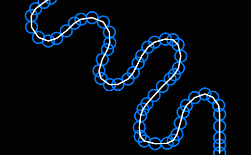
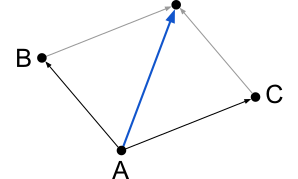
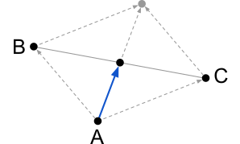
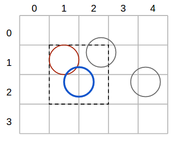
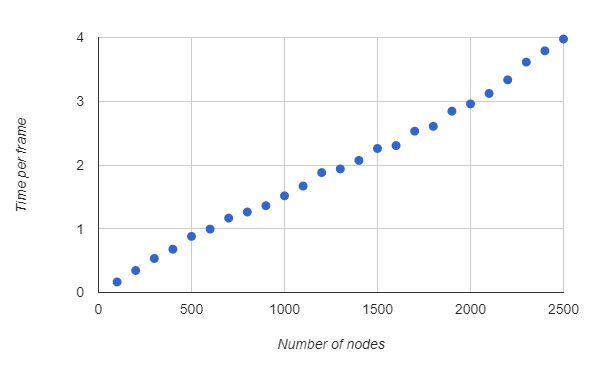
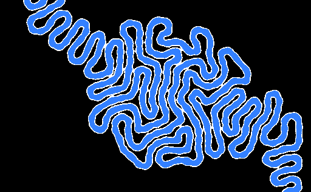
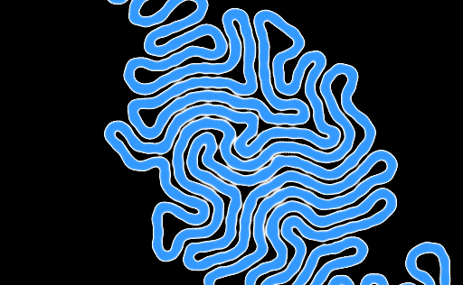
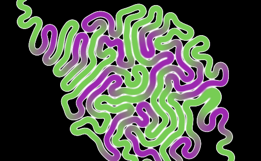
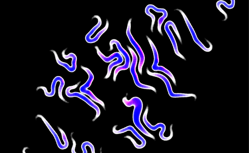
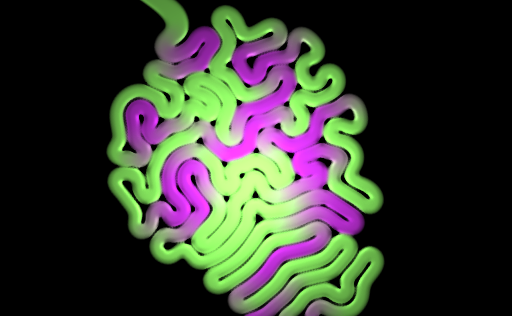

A while ago I made a real time simulation of differential growth, and I thought I'd write a bit about its inner workings and what it took to make it.
The source code is on github, and you can see the experiment in action here. It's written in JavaScript, and uses WebGL and WebWorkers.
I got the idea for the experiment when I saw this video. The structures in the video all look very interesting and organic. I decided to pick one and try to replicate it in real-time. In addition, the experiment would be available online, and would have some kind of interaction.
The simplest structures must be variant #2 line expansion at 0:28 and variant #6 "directed line expansion". Next in terms of complexity seems to be variant #3 planar expansion at 0:49. The rest seem to work with volumes, which makes both rendering and simulating quite hard and computationally intensive.
I thought I'd give directed line expansion (#6) a try.
The people behind the video have a website, with a lot of pictures and other materials which make everything clear. The magic blows away when you realize that the simulation is based on a finite number of nodes. This means that what you're seeing isn't a simulation of a continuous body, but rather an agglomeration of many small, discrete nodes.

This image is zoomed 4 times. The individual nodes wouldn't be noticeable at regular size even with this debug view turned on.
These nodes are called joints in the sourcecode, but here I'll use nodes and joints interchangeably, depending on the context.
Towards the end of the simulation the resulting structure looks very intricate and complex, but this emerges from a series of very simple rules. Here are the rules that describe the behaviour of the simulation:
Let's go though the behavior one more time to see how we go about implementing each rule, and how demanding they are computation wise.
For the first rule, to keep joints from stepping on each other we'll make any overlapping joints move away from each other. This means that for every node we'd have to check which other nodes it overlaps with. Doing this naively is not an option if we want to have more than 100 nodes at a steady 60 fps. This rule deserves a longer discussion and I'll come back to it later.
To make sure joints stay close to their neighbours and don't wander off, each one tries to get close to its neighbours. The joint will move towards its neighbours by looking at their positions. As joints can have at most two neighbours, only two lookups are necessary.
For the final rule, the joint will try to align itself with its neighbours by placing itself halfway between them. In order to know where to move it's necessary to lookup the neighbours' positions again.
Coincidentally, the last two rules move the joint in the same direction. The drawing below illustrate rule 2 and 3, respectively.
 
Getting back to the first rule about overlapping nodes, we need to figure out what data structure to store the nodes in. It's clear that an array that we iterate for each node is not going to cut it - it is however the simplest to implement. The best suited structure I can think of is a grid of buckets. Our use case favours this even more since the nodes are all of the same size.
If the buckets have the same width and height as the nodes' diameter, then building the grid should take linear time. Checking if a node overlaps another should take constant time as any node can occupy at most 4 buckets. Overall, applying the overlapping rule to all nodes takes linear time.

Take, for example, the blue node in the figure above. To find out which nodes overlap it, we only need to check the buckets that the node covers.
The solution thus far seems more than adequate. I've run some benchmarks that confirm this - the time increases linearly with the number of nodes.

Although I had optimized the simulation, the experiment was still rather slow. After doing some profiling, I noticed that the bottleneck seemed to be drawing on the canvas.
One easy way to make the experiment faster is to use multiple threads. There are two processes which can run in parallel - the simulation and the rendering. Moreover, the rendering has hard deadlines, while the simulation doesn't - it only has to have a certain throughput. Now the simulation thread can produce frames in advance and store them in a buffer for the rendering thread to consume.
Garbage collection spikes will happen sooner or later, but now that we have the buffer, they shouldn't incur any delays, unless we have many consecutive spikes.
Because of the buffer, any interaction with the experiment will be delayed by as many frames as can fit in the buffer. This is why it's best to limit the buffer, so that the delay isn't too high.
At the same time, I managed to completely separate simulation code from rendering code and I started running benchmarks and doing profiling of the simulation by itself. I didn't expect forEach, native Sets and even for ... of to show up in the profiles, but they sure did. In the end I used plain old for loops and arrays. I'm not a fan of micro-optimizations, but they payed off in this case.
The canvas renderer proved to be too slow - the alternative is a WebGL-based one. There are several mature WebGL renderers out there, and the one I'm most familiar with GooJS. I've worked on it for more than two years and I know it inside out. However, goo is a big-ish 3d entity-component game engine while what I need is just something to render sprites and apply some post processing.
I ultimately went with PixiJS as it's a small 2d renderer that supports sprite batching out of the box. Why are sprites important? Because I'm going to draw one for each node and with a bit of post-processing it should look similar to what it used to under the old renderer.
The sprites are radial gradients over the alpha channel. When they overlap they add up to form a fuzzy shoelace of sorts. We can feed this fuzzy image to a step filter and obtain something akin to the image below.

This looks kind of rough and lumpy - you can tell it's made up of blobs especially when you see it in motion. By adding extra "dummy" sprites between joints we obtain a more continuous aspect.

I'd also like the structure to have some life in it - the original one cycles colors as if it has some kind of vascular system. I'd like to replicate that by slightly tinting the otherwise color-less gradients I've been using.
For rendering the joints I used pixi's particle container, which is advertised as a really fast version of the Container built solely for speed. However, it doesn't support tinting which I need in order to give the structure its gradient. What it does have instead is per particle alpha value. I hacked the shader and used this alpha attribute to interpolate between the two colors of my experiment. I have hardcoded the colors into the pixi shader but that seems the only way. It would have been nice if pixi allowed some ways of extending their particle shader.
The end result with flat coloring looks like this.

While implementing this I made a really pretty bug. Unfortunately, the bug isn't preserved as a commit - all I have is this image.

Next, I started to fiddle with the graphics - I chose to try out a less flat look. One of my gripes with the experiment at this stage was that when two unrelated joints are too close, they tend to look as if they're merging. To make the gap between joints more visible, I added ambient occlusion as a filter. In the same filter I also added basic lighting. The normals to the surface can be calculated the same way AO was calculated - by looking up the value of adjacent texels in the initial render.

Now that we have lighting, an easy way to get more interactivity is to make the light follow the cursor. Light calculations are performed entirely on the rendering thread, which means there is no delay, unlike in the interaction with the structure itself. This makes the entire experiment feel responsive.
The experiment looked all right at this point, it even runs ok on my 4-year-old laptop with integrated graphics, so I decided to wrap it up and submit it to Chrome Experiments.
Several months after releasing, I realized that there are many
micro-optimizations and inlining that can be done on the code, all of which can
be done automatically. I was hoping the Google closure compiler could do that,
so I don't have to do it manually. If I just fed the initial code, I didn't get
any meaningful speedup, as the compiler couldn't infer types. What's more, from
early stages I had to make sure that certain properties that are used outside
of the optimised code were not mangled. I therefore had to rewrite every
joint.position as joint['position'], for example.
I proceeded to add types annotations in the entire code. I also tried to put everything in the same scope. Another thing I tried was to make the code more class-based, thinking that the compiler might like it more. After all these changes, and some manual inlining in critical parts, the most I could squeeze was a 20% speed-up.
Take the following snippet, for example:
/** @typedef {{ x: number, y: number }} */
var V2
/** @type {{ make: function(number, number): V2, add: function(V2, V2): V2 }} */
const Vec2 = (() => {
function /** V2 */ make (/** number */x, /** number */y) {
return { x, y }
}
function /** V2 */ add (/** V2 */a, /** V2 */b) {
a.x += b.x
a.y += b.y
return a
}
return { make, add }
})();
(() => {
const { make, add } = Vec2
const v = add(make(11, 22), make(33, 44))
console.log(v)
})()
The only thing the closure compiler manages to do is minify it, like this:
'use strict';var c = {a:function(a, b) {
return {x:a, y:b};
}, add:function(a, b) {
a.x += b.x;
a.y += b.y;
return a;
}}, d = c.a, e = c.add, f = e(d(11, 22), d(33, 44));
console.log(f);
However, the code can entirely be resolved at compile time - the whole program
can be reduced to console.log({ x: 44, y: 66 }).
What's more is that I had to fully type the whole thing. I have to
write types twice if I plan to namespace my functions like that.
The most annoying thing is that the most optimised version of the code on Chrome manages to be 84% slower on Firefox. Optimisations usually result in speed-ups in both Chrome and Firefox, but I managed to somehow hit Firefox's heuristics in a bad way. I chose to stop the optimisation process here, because it started feeling like a shamanic process.
There was an alternative data structure that I could have used for the simulation, namely a plain array, where the joints are sorted on the x-axis.
Sorting can take up to n log n - but maybe we can pull it off in linear time as the array is always in a mostly sorted state.
If we want to find out what nodes overlap a given node we have to check only the nodes that are positioned at most one diameter away. This should be a cheap operation given that the nodes are sorted.
How many nodes can we possibly inspect for overlap? The worst case scenario happens at the end of the simulation when the space is almost full. At this point there are roughly sqrt n nodes that need to be verified for each overlapping test. This raises the running time to n sqrt n. The approach might still be interesting if the constant factors in the grid of buckets are too high.
Using a real physics engine might be faster, because they're using more specialized data structures. On the other hand, it might be slower because they're trying to be physically accurate.
Another option would be to render the joints using GL_POINTS. All the information necessary to render a joint (position, radius, tint) can fit in a single 4-component attribute.
Yet another option would be to break up the simulation on multiple threads. They would, however, be hard to synchronise - if any one of the threads is late, then the whole frame is incomplete. The more threads we use, the higher the probability that at least one of them will be late. Moreover, frame buffers would also be very hard to maintain.